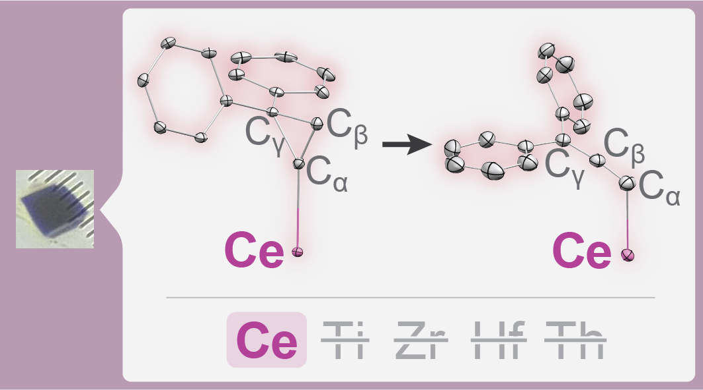

Inorganic Chemistry · Scientific Communication · Critical Analysis
I’m an inorganic chemist whose work spans fundamental molecular research and applied chemical-process development. My research has strengthened my interest in using fundamental chemistry to understand complex phenomena and address practical challenges. Across these areas, I’m most engaged by the process of identifying important questions, evaluating evidence and competing explanations, and communicating insights that advance our understanding or inform practical decisions.
Postdoctoral Research Fellow · University of Pennsylvania
Philadelphia,
PA

4f-Orbital Covalency and Chemical Reactivity
How 4f-orbital covalency enables an unusual solid-state isomerization reaction, challenging conventional understanding of lanthanide chemistry.
01 / ABOUT
Advancing chemical understanding.
Shaping practical solutions.
During my Ph.D. at the University of Pennsylvania, I investigated the bonding, electronic structure, and reactivity of f-element compounds, with particular attention to the roles of 4f-orbital covalency and molecular symmetry in determining their properties. This work involved synthesizing challenging molecular systems and integrating spectroscopic, crystallographic, and computational evidence to understand their behavior. I also developed experimental and mathematical methods to monitor and quantitatively characterize chemical transformations occurring within single crystals. These experiences shaped my approach to scientific investigation and strengthened my appreciation for the importance of integrating complementary lines of evidence, critically evaluating explanations against experimental results, and developing new analytical methods when existing approaches prove insufficient.
As a postdoctoral fellow at Penn, I have extended this approach to applied chemical research, developing an integrated, acid-free process for recovering nickel and cobalt from laterite ores. My work combines process development with chemical and mineralogical characterization to understand how feedstock composition and processing conditions influence metal recovery. Moving from molecular chemistry to complex mineral systems has broadened my scientific perspective, introducing new challenges in connecting fundamental chemical understanding with practical process design and optimization.
Through this work, I've also come to appreciate how much scientific progress depends on the careful interpretation and communication of evidence. Developing a convincing explanation for an experimental result is often as challenging as obtaining the result itself, and I've found the process of constructing and communicating those explanations to be among the most rewarding aspects of research.
Explore my publications ↗Research & Development
Inorganic & organometallic synthesis; chemical process development & optimization; experimental design; research project planning & management; interdisciplinary collaboration.
Structural & Chemical Analysis
Molecular & materials characterization; structure–property relationships; electronic structure analysis; chemical speciation; reaction mechanisms, kinetics, & thermodynamics.
Quantitative Modeling & Scientific Communication
Python-based kinetic & spectroscopic modeling; statistical analysis & data interpretation; scientific writing & presentation; teaching & mentorship.
02 / SELECTED PROJECTS
My research spans fundamental studies of molecular bonding and reactivity, the development of experimental and analytical methods, and applied chemical-process development. The projects below highlight selected scientific questions, approaches, and findings from this work.
03 / CONTACT
Let’s put good
chemistry to work.
I welcome conversations about research opportunities, chemical-process development, and scientific collaboration.
brett.vincenzini@gmail.com ↗